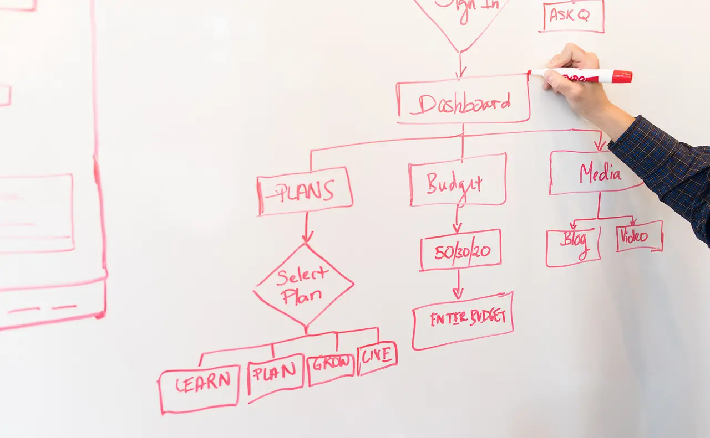

Website
Thiết kế website mất bao lâu? Thời gian theo từng loại web, từng giai đoạn và cách làm nhanh hơn
Câu trả lời ngắn là từ một tuần đến vài tháng, tùy loại website. Bài này tách thời gian theo từng loại web, từng giai đoạn, chỉ ra những chỗ hay làm dự án trễ và danh sách bạn có thể chuẩn bị ngay hôm nay.

Thiết kế website mất bao lâu phụ thuộc chủ yếu vào loại website: một website giới thiệu 5 trang dựng trên mẫu có sẵn thường xong trong 1–2 tuần, website thiết kế riêng có blog và trang quản trị mất khoảng 3–6 tuần, còn website bán hàng có thanh toán, đa ngôn ngữ hoặc kết nối phần mềm thường cần 1–3 tháng. Phần lớn dự án trễ không phải vì thiết kế hay lập trình, mà vì chờ nội dung và chờ duyệt.
Bên dưới là thời gian chi tiết theo từng loại website, các giai đoạn của một dự án, những nguyên nhân hay làm chậm và danh sách việc bạn nên chuẩn bị trước khi ký hợp đồng. Nếu bạn đang quan tâm cả chi phí, hãy đọc thêm bài báo giá thiết kế website.
Thời gian làm website theo từng loại
Không có một con số chung cho mọi website. Cùng gọi là "làm web", nhưng một trang giới thiệu quán cà phê và một website bán hàng có giỏ hàng, thanh toán, đồng bộ kho là hai khối lượng công việc rất khác nhau. Bảng dưới là khoảng thời gian thường gặp khi nội dung đã sẵn sàng, dùng để bạn ước lượng trước khi hỏi đơn vị làm web.
| Loại website | Khối lượng điển hình | Thời gian thường gặp |
|---|---|---|
| Landing page một trang | 1 trang, form hoặc nút Zalo | 3–7 ngày |
| Website giới thiệu theo mẫu | 5 trang, tinh chỉnh giao diện có sẵn | 1–2 tuần |
| Website doanh nghiệp thiết kế riêng | Đến 10 trang, blog, trang quản trị | 3–6 tuần |
| Website bán hàng | Danh mục, trang sản phẩm, giỏ hàng, thanh toán | 4–8 tuần |
| Website đa ngôn ngữ, nhiều tích hợp | Nhiều ngôn ngữ, CRM, thanh toán, hiệu ứng 3D | 6–12 tuần trở lên |
Khoảng thời gian này tính cho phần việc của bên làm web. Nếu nội dung chưa có, ảnh chưa chụp hoặc nhiều người cùng duyệt, tổng thời gian thực tế có thể dài gấp đôi. Nếu bạn chỉ cần một trang để chạy quảng cáo, đọc thêm bài landing page bán hàng để xem có cần cả website hay chưa.
Thời gian các gói website tại Dream Labs
Dream Labs ghi rõ thời gian cho từng gói thiết kế website, tính từ khi bạn gửi đủ nội dung và duyệt hướng thiết kế đúng hạn:
- Gói Cơ bản: 7–10 ngày. Website 5 trang, giao diện theo mẫu tinh chỉnh, form liên hệ, nút Zalo, SEO cơ bản. 4 vòng sửa.
- Gói Chuyên nghiệp: 14–21 ngày. Đến 10 trang thiết kế riêng, chuyển cảnh mượt, trang quản trị để tự đăng bài, viết nội dung chuẩn SEO. 9 vòng sửa.
- Gói Cao cấp: 30–45 ngày. Không giới hạn trang trong phạm vi, đa ngôn ngữ, 3D/WebGL, tích hợp thanh toán, CRM, trợ lý AI tiếp khách.
Con số được ghi thành khoảng, không phải một ngày cố định, vì tốc độ phản hồi của mỗi doanh nghiệp khác nhau. Bạn có thể mở thử các website trong phòng mẫu website để hình dung mức độ hoàn thiện ứng với từng khoảng thời gian.
Các giai đoạn của một dự án website
Hiểu các giai đoạn giúp bạn biết lúc nào mình cần có mặt, lúc nào có thể để đội làm web tự chạy. Một dự án thiết kế riêng thường đi qua sáu bước:
- Khám phá (1–2 ngày). Một buổi trao đổi về sản phẩm, khách hàng mục tiêu, đối thủ và mục tiêu của website. Kết quả là bản tóm tắt dự án và danh sách nội dung cần gửi.
- Sơ đồ trang và nội dung (2–5 ngày). Chốt website có những trang nào, mỗi trang có những khối gì, lời kêu gọi hành động đặt ở đâu. Đây là lúc doanh nghiệp gom chữ, ảnh, chứng nhận.
- Hướng thiết kế (2–4 ngày). Hai đến ba hướng thẩm mỹ bằng moodboard hoặc màn hình mẫu. Bạn chọn một hướng trước khi làm chi tiết, tránh làm xong cả website mới thấy không hợp.
- Thiết kế chi tiết và lập trình (5–20 ngày). Giai đoạn dài nhất, nhưng ít cần bạn tham gia. Bên làm web nên gửi bản xem thử trực tuyến định kỳ để bạn theo dõi.
- Chỉnh sửa và kiểm thử (2–7 ngày). Sửa theo góp ý trong số vòng đã thống nhất, kiểm tra trên nhiều điện thoại, trình duyệt, đo tốc độ, kiểm tra form và các nút liên hệ.
- Ra mắt và bàn giao (1–2 ngày). Trỏ tên miền, cài chứng chỉ bảo mật, gửi sơ đồ trang cho Google, bàn giao tài khoản và hướng dẫn sử dụng.

Ví dụ minh họa một lịch làm việc 18 ngày cho website doanh nghiệp khoảng 8 trang: ngày 1 họp khám phá; ngày 2–4 chốt sơ đồ trang, doanh nghiệp gửi nội dung; ngày 5–7 duyệt hướng thiết kế; ngày 8–14 thiết kế và lập trình; ngày 15–17 hai vòng chỉnh sửa và kiểm thử; ngày 18 ra mắt. Chỉ cần nội dung gửi trễ ba ngày ở bước 2, mọi mốc phía sau lùi theo ba ngày.
Một lưu ý kỹ thuật ở bước ra mắt: sau khi đổi cấu hình tên miền, thông tin mới cần thời gian lan truyền qua hệ thống DNS, thường vài giờ, đôi khi đến một hai ngày. Vì vậy không nên chọn ngày ra mắt sát ngay trước một sự kiện quan trọng.
Điều gì làm dự án website bị chậm
Khi một dự án trễ hẹn, nguyên nhân thường nằm ở một trong các điểm dưới đây. Biết trước để chủ động xử lý.
Nội dung chưa có
Đây là nguyên nhân phổ biến nhất. Chữ giới thiệu công ty, mô tả dịch vụ, ảnh sản phẩm, ảnh dự án, chứng nhận… nếu bắt đầu gom sau khi ký hợp đồng thì thường mất nhiều thời gian hơn cả phần thiết kế. Với website công ty, việc xin ảnh và thông tin từ nhiều phòng ban càng kéo dài.
Nhiều người duyệt, góp ý rời rạc
Mỗi người góp ý một lúc, có ý kiến trái ngược nhau, khiến một vòng sửa biến thành ba bốn vòng. Nên có một người duyệt cuối cùng, gom góp ý của cả nhóm thành một danh sách cho mỗi vòng.
Đổi phạm vi giữa chừng
Đang làm website giới thiệu thì muốn thêm giỏ hàng, đang làm tiếng Việt thì muốn thêm tiếng Anh. Mỗi thay đổi lớn kéo theo thiết kế lại cấu trúc. Nếu có ý tưởng mới, hãy để sang giai đoạn hai sau khi ra mắt.
Chờ bên thứ ba
Một số việc không nằm trong tay bên làm web: cổng thanh toán xét duyệt hồ sơ, thủ tục thông báo website thương mại điện tử, tài khoản Zalo OA hay Google Business Profile cần xác minh, tên miền cũ đang đứng tên người khác. Những việc này nên khởi động ngay từ tuần đầu.
Chuyển từ website cũ
Nếu website cũ đã có thứ hạng trên Google, cần thêm thời gian lập danh sách đường dẫn cũ và chuyển hướng sang trang mới để không mất lượt tìm kiếm. Bài thiết kế website chuẩn SEO có checklist cho bước này.
Dịch thuật
Website đa ngôn ngữ cần bản dịch được duyệt cho từng trang. Nếu bản dịch đến chậm, phần lập trình xong vẫn phải chờ. Xem thêm bài website đa ngôn ngữ cho doanh nghiệp xuất khẩu.
Khách cần chuẩn bị gì để website xong đúng hạn
Bạn có thể làm những việc sau ngay cả khi chưa chọn được đơn vị thiết kế. Càng chuẩn bị đủ, lịch làm việc càng sát với con số trong báo giá.
- Mục tiêu chính của website: để khách gọi điện, nhắn Zalo, đặt lịch, mua hàng hay tải hồ sơ năng lực. Mỗi website nên có một hành động chính.
- Danh sách trang: trang chủ, giới thiệu, dịch vụ hoặc sản phẩm, dự án, bảng giá, tin tức, liên hệ. Ghi rõ trang nào bắt buộc, trang nào có thể làm sau.
- Logo, màu và font thương hiệu dạng file gốc (AI, SVG hoặc PNG nền trong).
- Nội dung chữ: giới thiệu, mô tả từng dịch vụ, câu hỏi khách hay hỏi. Bản nháp cũng được, quan trọng là đúng thông tin.
- Ảnh thật: sản phẩm, cửa hàng, đội ngũ, dự án. Ảnh chụp bằng điện thoại đời mới, đủ sáng vẫn dùng được tốt hơn ảnh mạng.
- Ba đến năm website bạn thích, kèm lý do thích: bố cục, màu sắc hay cách viết.
- Thông tin tên miền và hosting nếu đã có, hoặc tên miền muốn đăng ký. Nên đứng tên doanh nghiệp.
- Một người phụ trách có quyền duyệt cuối cùng và phản hồi trong vòng một đến hai ngày.
Ví dụ minh họa theo ngành
Hai ví dụ dưới đây là tình huống giả định để minh họa, không phải khách hàng thật của Dream Labs.
Phòng khám nha khoa cần website giới thiệu dịch vụ
Một phòng khám nha khoa ở Đà Nẵng muốn website 6 trang: giới thiệu, bác sĩ, dịch vụ, bảng giá, kiến thức, đặt lịch. Phòng khám đã có logo, ảnh cơ sở và bảng giá. Phần chậm nhất là ảnh chân dung bác sĩ và nội dung từng dịch vụ cần bác sĩ duyệt chuyên môn. Nếu lên lịch chụp ảnh và giao bác sĩ duyệt nội dung ngay tuần đầu, website có thể ra mắt trong khoảng ba tuần.
Xưởng nội thất muốn bán hàng online
Một xưởng nội thất ở Bình Dương có hơn 200 mẫu sản phẩm, muốn khách xem mẫu, chọn kích thước và đặt cọc online. Ngoài thiết kế và lập trình, xưởng cần chuẩn hóa tên, kích thước, giá cho từng sản phẩm, chụp ảnh đồng bộ, đăng ký cổng thanh toán. Hợp lý là chia hai giai đoạn: ra mắt trước với các nhóm sản phẩm bán chạy và nút Zalo trong khoảng 4–5 tuần, sau đó bổ sung đặt cọc online khi cổng thanh toán đã duyệt.
Có thể làm website gấp không?
Có, nếu bạn chấp nhận đánh đổi. Ba cách rút ngắn thời gian mà không làm hỏng chất lượng:
- Ra mắt theo giai đoạn. Làm trước các trang quan trọng nhất (trang chủ, dịch vụ, liên hệ), thêm blog, dự án, ngôn ngữ thứ hai sau.
- Bắt đầu từ mẫu có sẵn. Giao diện theo mẫu tinh chỉnh nhanh hơn thiết kế riêng hoàn toàn. Khi doanh nghiệp lớn hơn có thể nâng cấp.
- Gom góp ý theo vòng. Mỗi vòng gửi một danh sách đầy đủ, phản hồi trong 24 giờ.
Điều nên tránh là ép thời gian bằng cách bỏ bước kiểm thử. Một form liên hệ không gửi được hay trang lỗi trên điện thoại sẽ làm mất khách ngay từ ngày đầu. Lựa chọn nền tảng cũng ảnh hưởng đến tốc độ làm và chi phí về sau, bạn có thể đọc bài nên làm website bằng WordPress hay code tay.
Sai lầm thường gặp về thời gian làm website
- Chỉ hỏi "bao lâu xong" mà không hỏi "tính từ khi nào". Mốc thời gian trong báo giá thường tính từ lúc có đủ nội dung, không phải từ ngày ký hợp đồng.
- Chọn đơn vị hứa nhanh nhất. Website "3 ngày xong" thường là cài mẫu sẵn và thay chữ. Có thể phù hợp nếu bạn chỉ cần vậy, nhưng nên biết rõ mình nhận được gì.
- Không có lịch theo mốc. Hợp đồng nên ghi các mốc: duyệt hướng thiết kế, bản xem thử, ra mắt, kèm việc của mỗi bên ở từng mốc.
- Để tên miền, hosting đến phút cuối. Tên miền đứng tên người khác hoặc hết hạn có thể làm chậm ngày ra mắt vài ngày.
- Quên tính thời gian sau ra mắt. Website cần được theo dõi, cập nhật và gia hạn hằng năm. Xem bài chi phí duy trì website hằng năm để dự trù.
Chi phí và thời gian tại Dream Labs
Thời gian và chi phí đi cùng nhau: gói có nhiều trang thiết kế riêng, nhiều tích hợp hơn thì cần nhiều ngày làm hơn. Gói Cơ bản 8.000.000đ phù hợp khi bạn cần có mặt chuyên nghiệp trên Google trong khoảng 10 ngày. Gói Chuyên nghiệp 18.000.000đ dành cho doanh nghiệp muốn website thiết kế riêng, tự đăng bài lâu dài. Gói Cao cấp Liên hệ cho website đa ngôn ngữ, thanh toán, CRM.
| Gói | Giá | Thời gian | Bao gồm |
|---|---|---|---|
| Cơ bản | 8.000.000đ | 7–10 ngày4 vòng sửa | Có mặt chuyên nghiệp trên Google và điện thoại trong khoảng 10 ngày, khách tìm thấy và liên hệ được ngay.
|
| Chuyên nghiệpPhổ biến nhất | 18.000.000đ | 14–21 ngày9 vòng sửa | Website riêng đúng tầm thương hiệu, tự đăng bài để có khách từ Google lâu dài, không phụ thuộc người làm.
|
| Cao cấp | Liên hệ | 30–45 ngàyKhông giới hạn trong phạm vi | Trải nghiệm đủ khác biệt để định vị cao cấp, bán hàng và tiếp khách trực tuyến, phục vụ cả khách nước ngoài.
|
Xem so sánh đầy đủ tại bảng giá, hoặc trang thiết kế website doanh nghiệp nếu bạn làm website công ty. Để nhận lịch làm việc cụ thể theo nội dung bạn đang có, hãy nhắn Zalo 0934 246 420.
Câu hỏi thường gặp
Làm website giới thiệu công ty mất bao lâu?
Website giới thiệu khoảng 5 trang dựng trên mẫu tinh chỉnh thường mất 1–2 tuần, website thiết kế riêng đến 10 trang có blog thường mất 3–6 tuần, tính từ khi nội dung đã đủ.
Thời gian làm website được tính từ ngày nào?
Phần lớn đơn vị tính từ khi nhận đủ nội dung và bạn duyệt hướng thiết kế, không phải từ ngày ký hợp đồng. Hãy hỏi rõ điều này và yêu cầu ghi các mốc vào hợp đồng.
Website bán hàng có lâu hơn website giới thiệu không?
Có, vì cần thêm trang danh mục, trang sản phẩm, giỏ hàng, thanh toán và nhập dữ liệu sản phẩm. Website bán hàng thường cần 4–8 tuần, lâu hơn nếu có hàng trăm sản phẩm hoặc chờ cổng thanh toán duyệt.
Tôi chưa có nội dung thì có bắt đầu làm website được không?
Được. Bên làm web có thể bắt đầu sơ đồ trang và hướng thiết kế song song, hoặc viết nội dung giúp bạn nếu gói có dịch vụ viết nội dung. Tuy vậy, thông tin gốc về sản phẩm, dịch vụ vẫn phải do doanh nghiệp cung cấp và duyệt.
Có thể làm website trong 3 ngày không?
Có thể nếu là trang đơn giản cài trên mẫu sẵn và nội dung đã có đủ. Website thiết kế riêng, có kiểm thử trên nhiều thiết bị và tối ưu SEO thì khó làm tốt trong 3 ngày.
Ra mắt xong bao lâu thì website lên Google?
Google thường thu thập trang mới trong vài ngày đến vài tuần sau khi gửi sơ đồ trang qua Google Search Console. Để có thứ hạng cho từ khóa cạnh tranh thì cần nội dung tốt và thời gian dài hơn nhiều.
Ai giữ tiến độ khi dự án bị chậm?
Mỗi bên giữ phần việc của mình theo lịch đã thống nhất. Bên làm web nên báo tiến độ định kỳ và nhắc trước các mốc cần doanh nghiệp gửi nội dung hoặc duyệt.
Nguồn ảnh: ảnh bìa: Yan Krukau / Pexels · ảnh 1: Christina Morillo / Pexels · ảnh 2: Jakub Zerdzicki / Pexels. Ảnh dùng theo giấy phép miễn phí của Pexels, chỉ mang tính minh họa.
Bắt đầu cùng Dream Labs
Muốn biết website của bạn cần bao lâu?
Nhắn Zalo cho Dream Labs loại website, số trang và nội dung bạn đang có. Chúng tôi gửi lại lịch làm việc theo từng mốc và danh sách cần chuẩn bị.